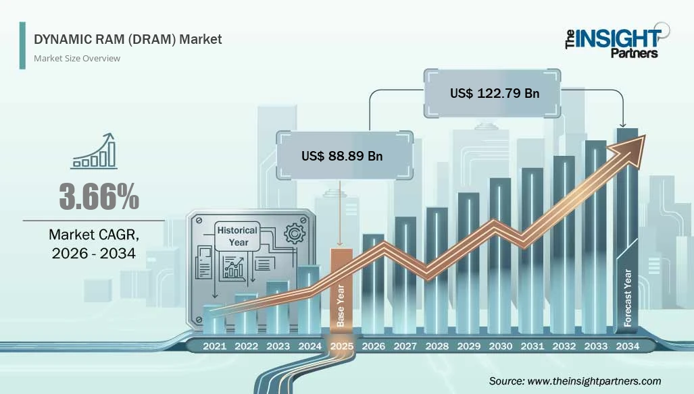

La memoria RAM no deja de subir de precio
Mohammed Rayan - 4 de octubre de 2026
Por qué sube

Los centros de datos de inteligencia artificial necesitan enormes cantidades de memoria. Los fabricantes han dedicado cada vez más producción a ese tipo de chips y queda menos para ordenadores y móviles. La escasez ha disparado los precios.
Los fabricantes

Según la prensa especializada, Samsung duplicó los precios de su memoria DRAM en el primer trimestre de 2026 y los subió otro 30 % en el segundo. Los analistas de Jefferies esperan nuevas subidas en el tercer y cuarto trimestre.
Qué significa para ti
Comprar un ordenador o un móvil sale más caro. Algunos fabricantes también reducen la cantidad de RAM de sus equipos para contener el precio final.